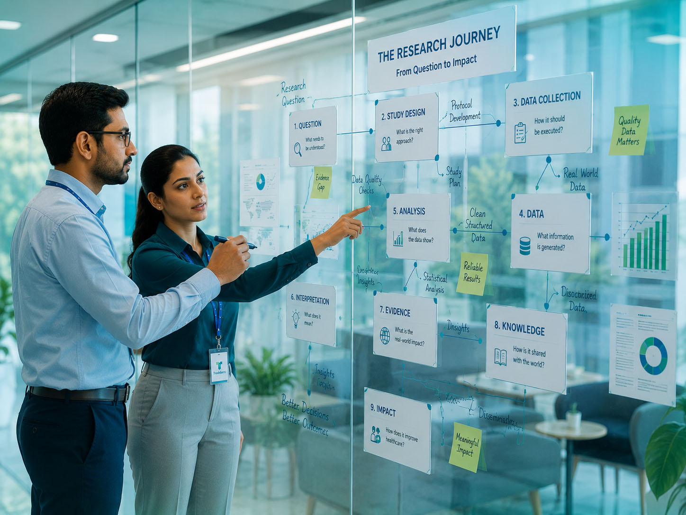

Clinical Research That Becomes Evidence
From the right question to the right approach, disciplined execution and meaningful interpretation, we help bring the elements of research together to generate evidence that can be trusted, understood and used.

Evidence is not simply generated. It is built.
Good evidence requires more than good data. It begins with a meaningful question and depends on appropriate methodology, disciplined research processes, reliable data, rigorous analysis and responsible scientific communication.
The integrity and reliability of evidence is defined by the rigor with which it is built.
From question to evidence.
Research moves through a series of connected stages. Every stage matters, and the right expertise at each step can influence the evidence that follows.
What needs to be understood?
What is the right way to investigate it?
How it should be executed?
What information is generated?
What does the data show?
What can the research support?
Connected capabilities. One research objective.
Research often requires more than one discipline. We bring together the scientific, operational, data, statistical and communication capabilities needed to support the research objective.
Built for the way clinical research really works.
Every research need is different. The question, evidence gap, and research context should shape the approach, and the expertise brought together to address it.
The science stays at the center, from question to evidence.
Different expertise working together around one research objective.
Move from research question to study initiation with less friction.
Engage the right capabilities, at the right level, when needed.
Focus on generating evidence that is credible, meaningful and useful.
Build research with the scientific and publication pathway in mind.
Different questions. Different evidence needs.
Our capabilities can be applied across different types of clinical, healthcare and evidence-generation research, depending on the question being addressed and the context in which evidence is needed.
Different research challenges. Different ways forward.
There is no standard answer to every research question. We begin by understanding the challenge and the evidence needed, then shape the approach and connect the capabilities required to move forward.
Understand the need → Define the evidence → Shape the approach → Connect the capabilities
Have a research question?
Let's start by understanding the challenge, the evidence you need and the right way to move forward.